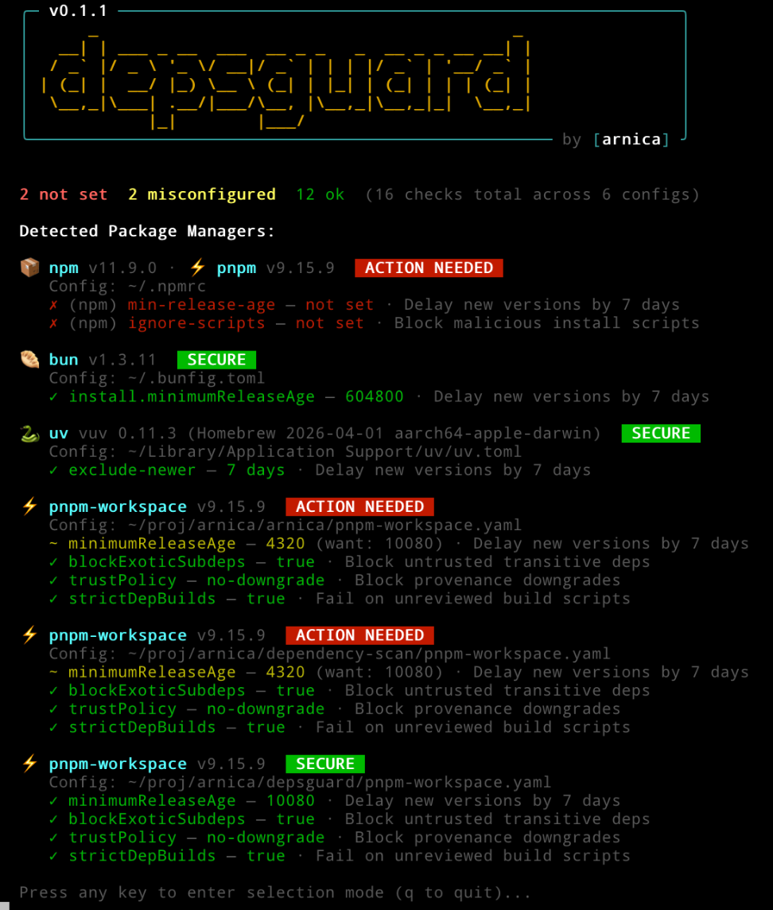
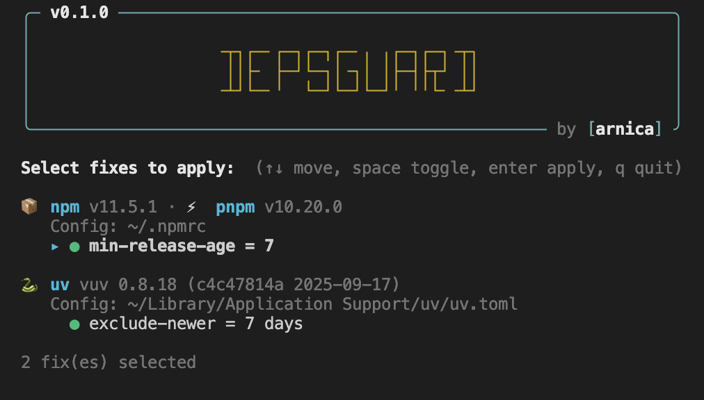
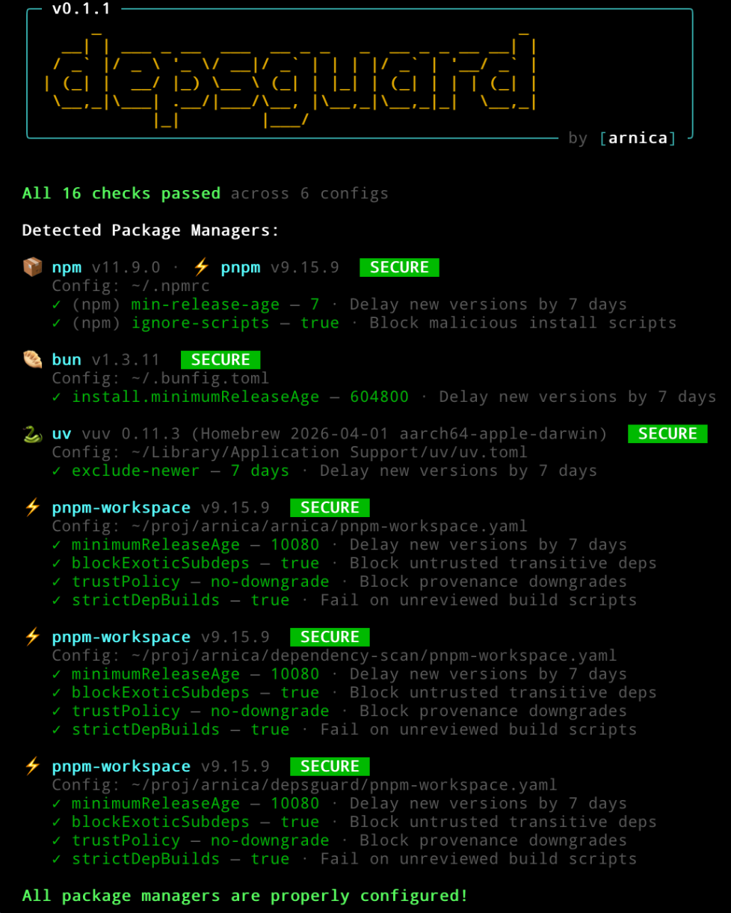

_ _
__| | ___ _ __ ___ __ _ _ _ __ _ _ __ __| |
/ _` |/ _ \ '_ \/ __|/ _` | | | |/ _` | '__/ _` |
| (_| | __/ |_) \__ \ (_| | |_| | (_| | | | (_| |
\__,_|\___| .__/|___/\__, |\__,_|\__,_|_| \__,_|
|_| |___/One command to scan npm, pnpm, bun, and uv configs for security best practices. Interactive terminal UI to apply fixes. Zero dependencies. Cross-platform. Free, MIT licensed.
brew tap arnica/depsguard
brew install depsguardRecommended for macOS; works on Linux with Homebrew too.
Status page: depsguard.com/apt
# APT repository is not published yet.
# Temporary Linux install:
curl -L -o depsguard.tar.gz https://github.com/arnica/depsguard/releases/latest/download/depsguard-x86_64-unknown-linux-gnu.tar.gz
tar -xzf depsguard.tar.gz
sudo install -m 0755 depsguard /usr/local/bin/depsguardwinget install Arnica.DepsGuard
# fallback: direct .zip from releasesscoop bucket add arnica https://github.com/arnica/scoop-depsguard
scoop install depsguardcargo install depsguardhttps://github.com/arnica/depsguard/releases/latestPackage availability can depend on publication status and review timelines. For full setup and fallback commands, see the README install guide.
min-release-age=7 — delays new versions by 7 daysignore-scripts=true — blocks malicious install scriptsminimumReleaseAge — workspace-level release delaytrustPolicy: no-downgrade — blocks provenance downgradesstrictDepBuilds: true — fails on unreviewed scriptsinstall.minimumReleaseAge=604800 — 7-day delay (seconds)exclude-newer — excludes recently published packagesDetects installed package managers and shows what's configured, what's missing, and what needs fixing.

Pick which fixes to apply interactively. Arrow keys to navigate, space to toggle, enter to apply.

Fixes applied with automatic backups. Use --restore to undo anytime.
